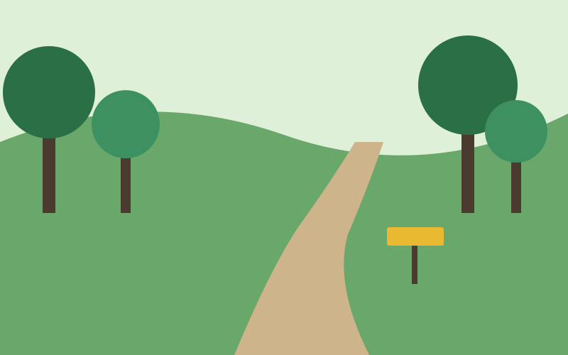
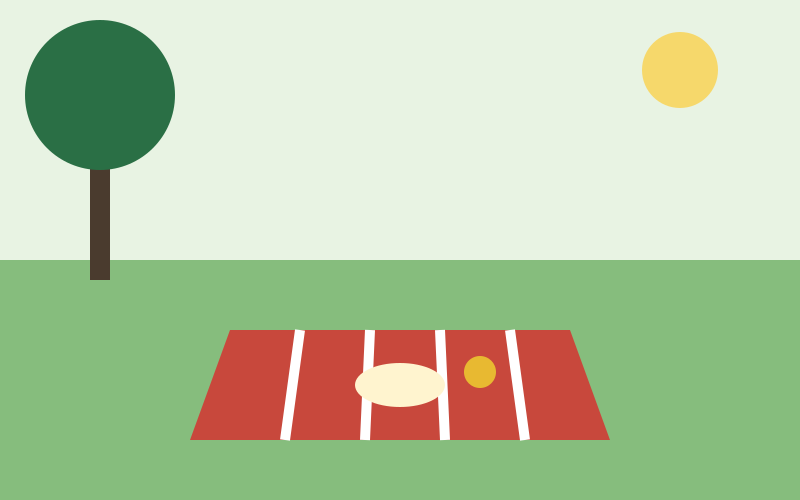

Shaded trails
Three walking loops from a 10-minute stroll to a 45-minute hike.
Maple Hollow Park has a pond, shaded trails, a playground and plenty of picnic space. Use this guide to find what you need before you go.


Three walking loops from a 10-minute stroll to a 45-minute hike.
Swings, slides and a soft surface for kids of all ages.

Open grass, tables and shade for family gatherings.